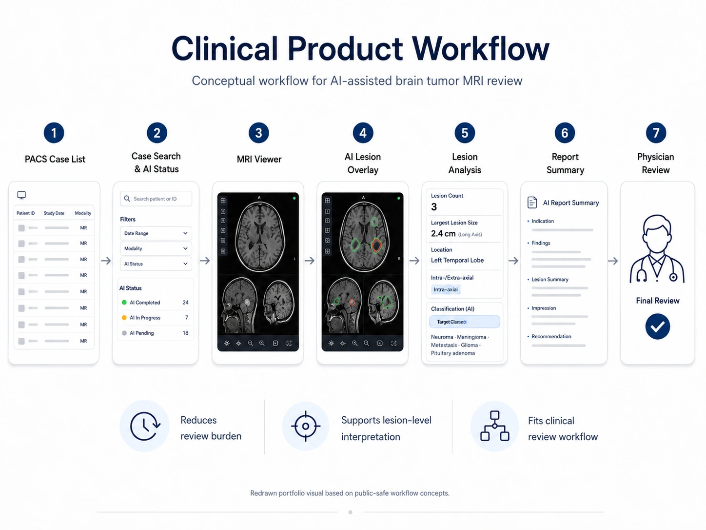

01FLAGSHIP CASE
From Medical AI Research to a Deployable Product
Connecting research, clinical validation, regulatory execution, and cross-functional delivery into a product path designed for real-world use.
ProductHealthcare AIRegulatory
10,893cases
2medical centers
TFDAsubmission

CLINICAL PRODUCT WORKFLOW↗